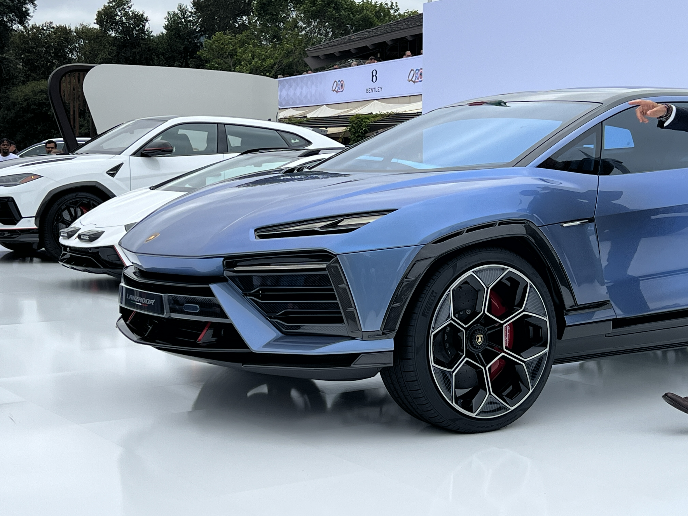

lanzador
 copy_large.jpg)

Lamborghini présente le concept car Lanzador lors de la Monterey Car Week,un aperçu visionnaire du quatrième modèle à venir dévoilé
par l’entreprise et prévu pour 2028.
Le véhicule est doté de deux moteurs électriques, c’est à dire 1 340 chevaux, afin de garantir la traction intégrale et l’efficacité quels que soient le rapport enclenché,
la chaussée et le style de conduite. La puissance maximale du système dépasse le mégawatt
Le pilote peut régler lui-même les systèmes de contrôle pendant la conduite,via les commandes présentes sur le volant sport.
Le conducteur peut donc modifier
activement le comportement de la voiture et créer un profil personnel pour exprimer au mieux ses besoins de conduite et garantir
des émotions jamais ressenties auparavant.
La nouvelle version du système de contrôle de la dynamique de conduite,
Lamborghini Dinamica Veicolo Integrata (LDVI), définira une nouvelle référence pour le constructeur de Sant’Agata Bolognese,
aussi bien en ce qui concerne les concept cars que les véhicules de série à venir.
Ce système de contrôle offre aux conducteursune liberté de personnalisation sans précédent
et leur permet de moduler les systèmes de contrôle actifs afin de répondre au mieux à leurs besoins de conduite